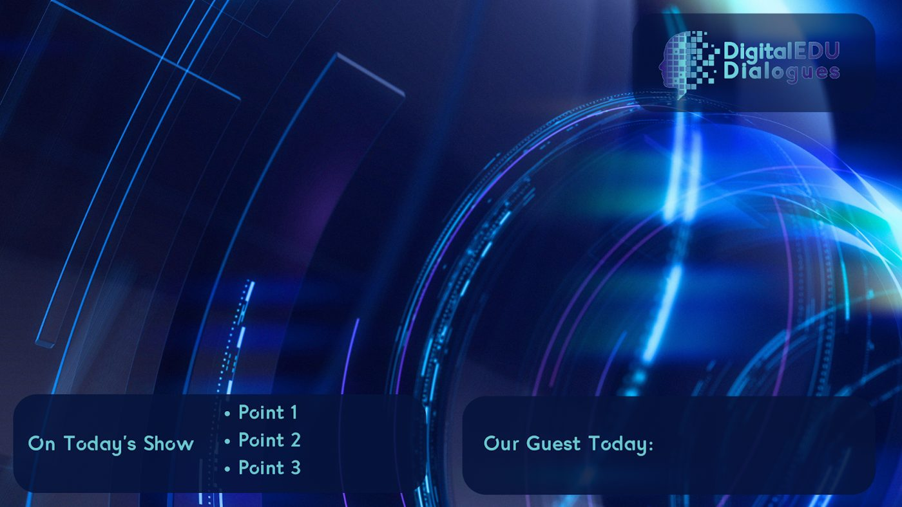

Brand Identity & Design DigitalEDU Dialogues
DigitalEDU Dialogues
Full Brand Development, Content Creation, Podcast Production, Style & Brand Guidelines, Graphic Design, Virtual Studio Creation, Opening & Closing Titles, Motion Graphics, Social Media Strategy, Marketing Campaigns, Audience Engagement, Color Schemes & Fonts, Video Editing, Master File Creation, Canva File Setup for Client Use, SEO Optimization, and Cross-Platform Content Distribution.
As the Creative Marketing Director for DigitalEDU Dialogues, I led the complete development of the podcast's brand identity, creating all digital assets necessary for its launch and success.
Podcast Brand Development
This included logo design, style guides, and the creation of custom fonts and color schemes that aligned with the podcast's educational focus. I also developed virtual studio sets and graphic elements to give the podcast a professional, cohesive look. From the opening titles to the closing credits, every aspect was meticulously designed to reflect the brand's mission, ensuring consistency across all platforms and providing a polished experience for the audience.
Brand Development & Video Logo Creation
I led the brand development process, creating a visually striking identity that featured teal and purple hues with subtle gradients. This color scheme was designed to work seamlessly across both light and dark backgrounds, ensuring versatility in all applications. I crafted a dynamic logo reveal as part of the podcast's opening video, which set the tone for the show's professional and engaging content. Every element, from the logo to the gradients, was meticulously developed to reflect the brand's modern and educational ethos, ensuring a consistent and polished presentation across all media.

Podcast Opening
I developed a captivating video podcast opening that adhered closely to the established style guides, fonts, and color schemes. The teal and purple hues, along with carefully chosen fonts, were incorporated to create a modern and cohesive look. I designed a dynamic opening logo animation that set the tone for the podcast, providing a professional and engaging introduction. This video opening not only reinforced the podcast's brand identity but also helped create a consistent visual experience, aligning with the educational focus of the series.
Social Media Templates
I extended the brand development by creating social media content that leveraged the established color schemes and cohesive design elements. I crafted templates featuring the podcast hosts, ensuring consistency in style across all platforms. These templates allowed the team to easily produce content while maintaining the podcast's visual identity. By integrating the brand's teal and purple hues with engaging designs, the social media content reinforced the podcast's presence and professionalism, driving audience engagement and increasing visibility across platforms.
Virtual Set & Name Tiles/Lower 3rds
I designed custom virtual sets and name tiles/lower thirds for the video podcast, enhancing the overall professionalism and visual appeal of the series. The virtual sets provided a polished, branded environment that elevated the look of the recordings, while the name tiles and lower thirds were tailored to match the podcast's style guides, incorporating the brand's colors and fonts. These elements added a cohesive and dynamic layer to the video content, allowing for seamless integration of host and guest information, which contributed to a more engaging and viewer-friendly experience.
YouTube & Website Graphics & Headers
I created YouTube slates, templates, and header graphics that were designed to build brand awareness across podcast ecosystems, optimize visibility on YouTube, and enhance the website's presence. These assets were crafted with a focus on aligning with YouTube's algorithms to improve noticeability and engagement. The header graphics and templates ensured a consistent and visually striking representation of the brand across all platforms, from YouTube channels to website banners. This cohesive approach reinforced the podcast's identity and helped drive audience growth and recognition in the competitive podcasting space.
Website & Mobile Design
I developed a clean, user-friendly website that prioritized both SEO optimization and design simplicity. The focus was on creating a streamlined and visually appealing experience that aligned with the brand's identity while ensuring ease of navigation for users. The website was built with a mobile-first approach, ensuring that all features were fully optimized for mobile devices without sacrificing functionality or aesthetics. With SEO best practices integrated into the design, the site was crafted to rank highly in search engines, enhancing visibility and engagement with the podcast's audience.
Want this kind of work on your brand?
If your brand should be working harder than it is, this is where it starts. One direct conversation.